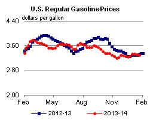
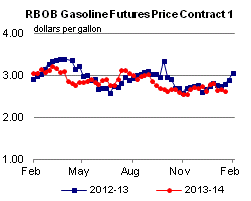
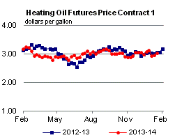

Released: January 23, 2014
Next Release: January 29, 2014
Crude Oil Imports Continue to Decline
For the second time since January 2000, weekly imports of crude oil into the United States fell below 7.0 million barrels per day (bbl/d) during the week ending January 10 (Figure 1), before rebounding slightly the following week. The reduction in crude imports reflected lower purchases by refiners ahead of maintenance season, as well as the continuing rise in domestic production that is displacing imported crude oil.
{kind=link}
Higher domestic crude oil production has been a key driver of reduced crude imports in recent years. U.S. crude oil production averaged 5.7 million bbl/d in 2011. Since then, crude oil production has grown 1.7 million bbl/d to an average of 7.4 million bbl/d through October 2013 (the last month for which monthly data are available). Over the same period, imports have fallen 1.2 million bb/d to average 7.7 million bbl/d during the first 10 months of 2013.
The recent drop in imports fits squarely into that trend, with weekly data indicating the decline picked up steam in the final months of 2013 and continued into January 2014. Data from EIA's Weekly Petroleum Status Report indicate domestic crude oil production averaged more than 8.1 million bbl/d for the four weeks ending January 17, which, if confirmed in the monthly data, would represent growth of more than 370,000 bbl/d since October.
While growing production continues to push the absolute level of imports lower, seasonal factors are also partially responsible for the decline in crude oil imports. The declines reflected in recent weekly data are likely the result of decreased crude buying ahead of refinery maintenance season. Average imports typically fall about 300,000 bbl/d from the end of October through the second week of January, a decline similar to the drop in four-week average imports observed in most recent weekly data over that period. EIA's January Short-Term Energy Outlook projects crude oil inputs at U.S. refineries to average 14.7 million bbl/d in February, down from almost 16.0 million bbl/d in December 2013.
The decline in crude oil imports is not uniform across regions.Declines are most pronounced in PADD 3 (Gulf Coast) and PADD 1 (East Coast), while crude imports into PADD 2 (Midwest) continue to increase (Figure 2). Despite crude oil production growth in the Midwest, mostly from North Dakota's Bakken tight oil formation, Midwest refineries are processing increased amounts of crude oil imported from Canada. In recent years, several Midwest refineries have made investments to process more heavy Canadian oil. Most notable among these investments is the recently completed coker at BP's 399,000-bbl/d Whiting, Indiana, refinery near Chicago. For the four weeks ending January 17, Midwest crude oil imports averaged 1.9 million bbl/d, just under the record of 2.0 million bbl/d set during the four weeks ending March 1, 2013. As Midwest refineries take additional Canadian crude, growing production from the Bakken formation is increasingly moving via railroad to the East and West Coasts. East Coast refineries have increased their rail receipts of Bakken crude substantially over the past year. This increase in Bakken shipments has helped reduce import requirements at the East Coast refineries, which are generally more suited to run light sweet grades than are refineries in other parts of the country. In three separate weeks during the past two months, crude oil imports into PADD 1 have averaged less than 500,000 bbl/d, the only three times imports have been that low since EIA began collecting PADD-level import data in 1990. Currently, rail shipments to the West Coast are smaller than they are to the East Coast. Thus, West Coast imports are only slightly under the five-year average level.
{kind=link}
Gulf Coast crude imports are also near multi year lows. Gulf Coast refineries are located close to the two fastest growing tight oil formations, the Eagle Ford and Permian. Crude oil from these basins is also generally of light sweet quality. However, because it is less economic to ship Eagle Ford and Permian basin production to the U.S. demand centers for light sweet crude oil on the East Coast, more Eagle Ford and Permian crude oil is being processed in Gulf Coast refineries, replacing imported crude.
Gasoline and diesel fuel prices fall
The U.S. average retail price of regular gasoline decreased three cents to $3.30 per gallon as of January 20, 2014, two cents lower than last year at this time. Prices decreased in all regions of the nation with the largest decrease coming in the Midwest, where the price was five cents lower than last week at $3.20 per gallon. The West Coast price fell three cents to $3.49 per gallon and the East Coast price was $3.39 per gallon, a drop of two cents from last week. The Gulf Coast price lost a penny to total $3.10 per gallon while the Rocky Mountain price decreased less than a cent to remain at $3.15 per gallon.
The national average diesel fuel price fell one cent to $3.87 per gallon, three cents lower than last year at this time. The East Coast price increased a penny to $3.95 per gallon while prices in all other regions of the nation fell. The West Coast and Rocky Mountain prices both dropped three cents to $3.97 per gallon and $3.86 per gallon, respectively. The Midwest price was $3.83 per gallon, a decrease of two cents, and on the Gulf Coast, the price lost a penny to $3.77 per gallon.
U.S. propane stocks fell by 3.4 million barrels to end at 35.3 million barrels last week, 25.6 million barrels (42.1%) lower than a year ago. Midwest regional inventories dropped by 1.3 million barrels and Gulf Coast inventories decreased by 1.2 million barrels. East Coast inventories dropped by 0.5 million barrels and Rocky Mountain/West Coast inventories decreased by 0.3 million barrels. Propylene non-fuel-use inventories represented 10.3% of total propane inventories.
Residential propane price increases sharply, heating oil price increases
Residential heating oil prices increased by over 4 cents per gallon to reach a price of nearly $4.06 per gallon during the period ending January 20, 2014. This is 4 cents per gallon higher than last year's price at this time. Wholesale heating oil prices increased by more than 11 cents per gallon last week to $3.21 per gallon.
The average residential propane price increased by 10 cents per gallon last week to over $2.96 per gallon, 68 cents per gallon higher than the same period last year. This is the largest single week increase since the start of the heating season in October. Wholesale propane prices rose almost 41 cents per gallon to $2.11 per gallon as of January 20, 2014.
Text from the previous editions of This Week In Petroleum is accessible through a link at the top right-hand corner of this page.
|  | |||||||
 |
|||||||
| Retail Data | Change From Last | Retail Data | Change From Last | ||||
| 01/20/14 | Week | Year | 01/20/14 | Week | Year | ||
| Gasoline | 3.296 | Heating Oil | 4.055 | ||||
| Diesel Fuel | 3.873 | Propane | 2.964 | ||||
|  | |||||||||||||||||||||||||||
|
 | ||||||||||||||||||||||||||
| *Note: Crude Oil Price in Dollars per Barrel. | |||||||||||||||||||||||||||
| Stocks Data | Change From Last | Stocks Data | Change From Last | ||||
| 01/17/14 | Week | Year | 01/17/14 | Week | Year | ||
| Crude Oil | 351.2 | Distillate | 120.7 | ||||
| Gasoline | 235.3 | Propane | 35.263 | ||||